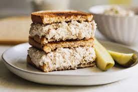

Description
Tuna sandwiches are great for a quick and easy meal. Best eaten with your hands.
Ingredients:
- Can of tuna
- Mayo
- Bread
- Olives, tomatoes or any other complement you like
Steps:
- In a bowl, use your fork to mix the tuna with mayo and some sal and pepper
- Cut two slices of bread
- Spread the tuna mix on top of the bread slices
- Add any other complement you wish
Go to recipes home page